EVAL-CN0585-FMCZ consists of 4 x 16-bit ADC channels and
4 x 16-bit DAC channels that are interfaced with an FPGA through the
FMC Low Pin Count (LPC) Connector. Current revision of EVAL-CN0585-FMCZ
is Rev B. EVAL-CN0584-EBZ is the application specific analog front end (AFE) board.
CN0584 is connected to a Zedboard to build a development system setup.
The Low Latency Development Kit (LLDK) provides a complete data acquisition and
signal generation platform with on-board power rails, voltage monitoring, logic
level translation, general purpose I/O, I2C, SPI, and a personality interface
connector.
The key performance benefit of the LLDK system is the ability to perform a
complete capture and conversion of precision analog input data in <70ns with the
ADC module and generate a settled full-scale analog output in <200ns from
initial data written to the DAC.
There are four channels of differential input signals on EVAL-CN0584-EBZ.
Table 1 ADC Input Signal Connectors
Channel
Positive Input Signal
Negative Input Signal
Channel 0
J1
J2
Channel 1
J3
J4
Channel 2
J5
J6
Channel 3
J7
J8
ADC Input Range Configuration
This LLDK has configurable input voltage ranges of ±10V (Default), ±5V, ±4.096V,
±2.5V, and ±1.5V. The input range can be changed by modifying resistor
placements on EVAL-CN0584-EBZ as described in Table 2.
Table 2 ADC Input Voltage Range Selection by Resistor Connections
Channel
Input Voltage Range
AFE Board Modification
Channel 0
±10 V (default)
Include R19A, R21A, R22A, R24A; DNI R18A,
R20A, R23A, R25A
±5 V
Include R18A, R20A, R23A, R25A; DNI R19A,
R21A, R22A, R24A
±4.096 V
Include R19A, R21A; DNI R18A, R20A, R22A,
R23A, R24A, R25A
±2.5 V
Include R18A, R20A; DNI R19A, R21A, R22A,
R23A, R24A, R25A
±1.5 V
Include R18A, R19A, R20A, R21A; DNI R22A,
R23A, R24A, R25A
Channel 1
±10 V (default)
Include R19B, R21B, R22B, R24B; DNI R18B,
R20B, R23B, R25B
±5 V
Include R18B, R20B, R23B, R25B; DNI R19B,
R21B, R22B, R24B
±4.096 V
Include R19B, R21B; DNI R18B, R20B, R22B,
R23B, R24B, R25B
±2.5 V
Include R18B, R20B; DNI R19B, R21B, R22B,
R23B, R24B, R25B
±1.5 V
Include R18B, R19B, R20B, R21B; DNI R22B,
R23B, R24B, R25B
Channel 2
±10 V (default)
Include R19C, R21C, R22C, R24C; DNI R18C,
R20C, R23C, R25C
±5 V
Include R18C, R20C, R23C, R25C; DNI R19C,
R21C, R22C, R24C
±4.096 V
Include R19C, R21C; DNI R18C, R20C, R22C,
R23C, R24C, R25C
±2.5 V
Include R18C, R20C; DNI R19C, R21C, R22C,
R23C, R24C, R25C
±1.5 V
Include R18C, R19C, R20C, R21C; DNI R22C,
R23C, R24C, R25C
Channel 3
±10 V (default)
Include R19D, R21D, R22D, R24D; DNI R18D,
R20D, R23D, R25D
±5 V
Include R18D, R20D, R23D, R25D; DNI R19D,
R21D, R22D, R24D
±4.096 V
Include R19D, R21D; DNI R18D, R20D, R22D,
R23D, R24D, R25D
±2.5 V
Include R18D, R20D; DNI R19D, R21D, R22D,
R23D, R24D, R25D
±1.5 V
Include R18D, R19D, R20D, R21D; DNI R22D,
R23D, R24D, R25D
DAC Outputs
LLDK can support multiple output voltage ranges which can be configured, such as
0V to 2.5V, 0V to 5V, −5V to +5V, and −10V to +10V, and custom
intermediate ranges with full 16-bit resolution. In order to change the output
range, resistor placements on the AFE board must be modified and register
settings must be applied to AD3552R on EVAL-CN0585-FMCZ
as described in Table 4.
Table 3 DAC Output Signal Connectors
Channel
Output Signal
A
J9
B
J10
C
J11
D
J12
Table 4 DAC Output Voltage Range Selection by Resistor Connections and Register Settings
Channel
Output Span
VZS (V)
VFS (V)
AFE Board
Modification
Register
Setting
CH0
+/- 10V
(Default)
-10.382
10.380
Include R9;
DNI R10, R11
CH0_CH1
_OUTPUT_RANGE
= 0x100
+/- 5V
-5.165
5.166
Include R11;
DNI R9, R10
CH0_CH1
_OUTPUT_RANGE
= 0x011
10V
-0.165
10.163
Include R11;
DNI R9, R10
CH0_CH1
_OUTPUT_RANGE
= 0x010
5V
-0.078
5.077
Include R10;
DNI R9, R11
CH0_CH1
_OUTPUT_RANGE
= 0x001
2.5V
-0.198
2.701
Include R10;
DNI R9, R11
CH0_CH1
_OUTPUT_RANGE
= 0x000
CH1
+/- 10V
(Default)
-10.382
10.380
Include R12;
DNI R13, R14
CH0_CH1
_OUTPUT_RANGE
= 0x100
+/- 5V
-5.165
5.166
Include R13;
DNI R12, R14
CH0_CH1
_OUTPUT_RANGE
= 0x011
10V
-0.165
10.163
Include R13;
DNI R12, R14
CH0_CH1
_OUTPUT_RANGE
= 0x010
5V
-0.078
5.077
Include R14;
DNI R12, R13
CH0_CH1
_OUTPUT_RANGE
= 0x001
2.5V
-0.198
2.701
Include R14;
DNI R12, R13
CH0_CH1
_OUTPUT_RANGE
= 0x000
CH2
+/- 10V
(Default)
-10.382
10.380
Include R15;
DNI R16, R17
CH2_CH3
_OUTPUT_RANGE
= 0x100
+/- 5V
-5.165
5.166
Include R16;
DNI R15, R17
CH2_CH3
_OUTPUT_RANGE
= 0x011
10V
-0.165
10.163
Include R16;
DNI R15, R17
CH2_CH3
_OUTPUT_RANGE
= 0x010
5V
-0.078
5.077
Include R17;
DNI R15, R16
CH2_CH3
_OUTPUT_RANGE
= 0x001
2.5V
-0.198
2.701
Include R17;
DNI R15, R16
CH2_CH3
_OUTPUT_RANGE
= 0x000
CH3
+/- 10V
(Default)
-10.382
10.380
Include R18;
DNI R19, R20
CH2_CH3
_OUTPUT_RANGE
= 0x100
+/- 5V
-5.165
5.166
Include R19;
DNI R18, R20
CH2_CH3
_OUTPUT_RANGE
= 0x011
10V
-0.165
10.163
Include R19;
DNI R18, R20
CH2_CH3
_OUTPUT_RANGE
= 0x010
5V
-0.078
5.077
Include R20;
DNI R18, R19
CH2_CH3
_OUTPUT_RANGE
= 0x001
2.5V
-0.198
2.701
Include R20;
DNI R18, R19
CH2_CH3
_OUTPUT_RANGE
= 0x000
Voltage Reference
The default ADC reference configuration uses the internal 2.048V, ±0.1%
accurate, 20ppm/°C max voltage reference. For more stringent use cases where
the accuracy and temperature drift is an issue, an external LTC6655
2.048V, ±0.025% accurate, 2ppm/°C max voltage reference can be used.
The default DAC reference configuration uses the internal 2.5V, ±0.3% accurate,
10ppm/°C max voltage reference. For more stringent use cases where the accuracy
and temperature drift is an issue, an external ADR4525 2.5V,
±0.02% accurate, 2ppm/°C max voltage reference can be used.
Table 5 VREF Configuration
VREF
Jumper Settings
ADC_VREF
Short P5
DAC_VREF
Short P4
Power Supply Considerations and Configuration
All power for CN0584 is provided by EVAL-CN0585-FMCZ through
the analog front end (AFE) connector. CN0584 uses the +15V and -15V rails to provide the positive
and negative supply voltages for the ADG5421F input protection switches. The +12V and -12V rails
provide the positive and negative supply voltages for the ADA4898-1 ADC buffer amplifiers.
The +3.3V rail powers the EEPROM circuit.
Power tree information can be found in EVAL-CN0585-FMCZ.
Table 6 provides more details on LLDK power rails:
Table 6 Power Rail Descriptions
Power Rail
Description
+12 V
LT3045-1 provides the 12V rail supplying up 280mA
-12 V
LT3094 provides the -12V rail supplying up to -280mA
+15 V
LTM8049 provides the +15V rail at 80% efficiency
-15 V
LTM8049 provides the -15V rail at 80% efficiency
+3.3 V
Fed through from the FPGA FMC connector to the AFE connector
System Setup Using a ZedBoard
CN0584 is fully supported using a ZedBoard.
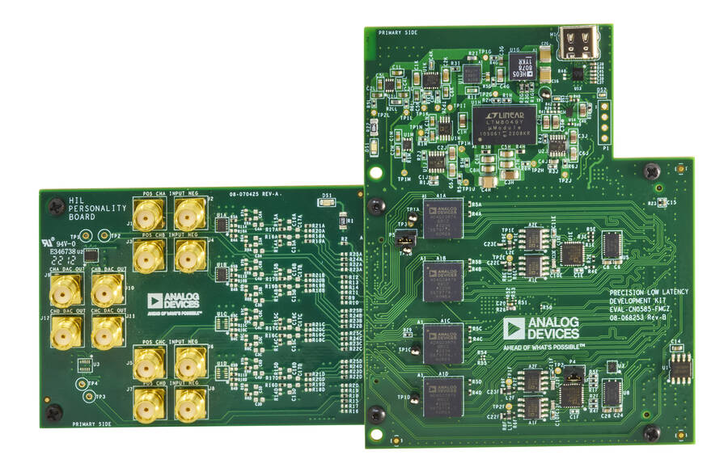
Figure 4 EVAL-CN0585-FMCZ revB connected to EVAL-CN0584-EBZ
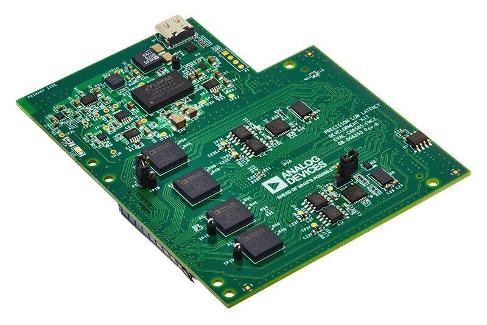
Figure 5 EVAL-CN0585-FMCZ revB
The following is a list of items needed for system setup:
(Note: Figure 4 features EVAL-CN0585-FMCZ RevA board. Current LLDK system has RevB board shown in
Figure 5, same connectors and functionalities, only different in USB-C power supply.)
The box includes a pre-programmed SD card. You can skip the steps in this
section and go to the Setting up the Hardware if using
the provided card.
To boot the ZedBoard and control the EVAL-CN0585-FMCZ, you will
need to install ADI Kuiper Linux on an SD card. Complete instructions, including
where to download the SD card image, how to write it to the SD card, and how to
configure the system are provided on the Kuiper Linux.
Configuring the SD Card
Follow the configuration procedure under Configuring the SD Card for FPGA Projects
on Kuiper Linux.
Copy the following files onto the boot directory to configure the SD card:
Connect the DAC output connectors to the negative ADC input connectors as
shown in Figure 7 using coax cables (e.g., DAC0 to ADC0-neg, DAC1 to ADC1-neg,
etc.). Terminate the positive ADC connectors with 50ohms SMA terminators.
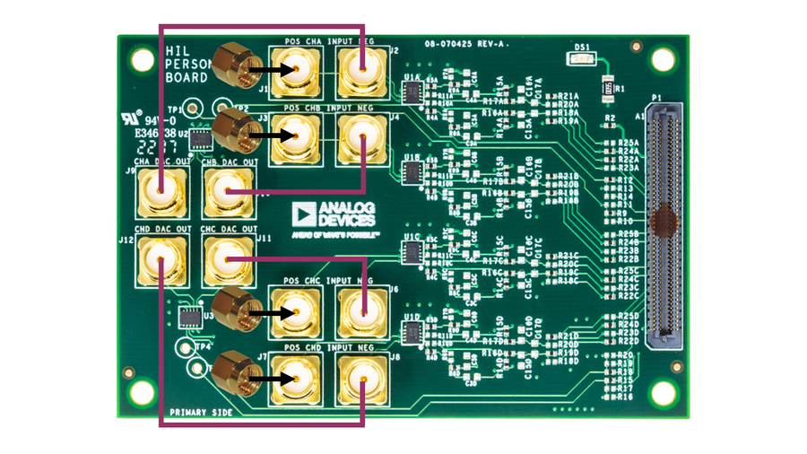
Figure 7 EVAL-CN0584-EBZ Loopback Connection on AFE
Turn the ZedBoard on.
Wait ~30 seconds for the “DONE” LED to turn blue. This is near the DISP1.
The hardware set up is now complete.
Figure 8 Example System Setup
All the products described on this page include ESD (electrostatic discharge) sensitive devices. Electrostatic charges as high as 4000V readily accumulate on the human body or test equipment and can discharge without detection.
Although the boards feature ESD protection circuitry, permanent damage may occur on devices subjected to high-energy electrostatic discharges. Therefore, proper ESD precautions are recommended to avoid performance degradation or loss of functionality. This includes removing static charge on external equipment, cables, or antennas before connecting to the device.
Application Software (both locally and remotely on the FPGA)
The CN0584 can be interfaced with using IIO Oscilloscope, Python, or MATLAB to
enable device configuration, capture of incoming samples from the ADCs, and
generation of waveforms to be transmitted by the DACs.
Hardware Connection
Libiio is a library used for interfacing with IIO devices and must be installed
on your computer to interface with the hardware.
Download and install the latest Libiio package on your
machine.
To connect to your device, the IIO Osciloscope software must be able to create a
context. The context creation in the software depends on the backend used to
connect to the device as well as the platform where the EVAL-CN0585-FMCZ is attached.
The ZedBoard running ADI Kuiper Linux is currently the only platform supported for the CN0585.
The user needs to supply a Uniform Resource Identifier (URI) which will be
used in the context creation. To get the URI, use the command iio_info in the
terminal. The iio_info command is a part of the libIIO package
that reports all IIO attributes. Upon installation, simply enter the command on
the terminal command line to access it.
For FPGA (ZedBoard) Direct Local Access
iio_info
For Windows machine connected to an FPGA (ZedBoard)
Do note that the Windows machine and the FPGA board should be connected
to the same network for the machine to detect the device.
IIO Oscilloscope
IIO Oscilloscope
is a cross platform GUI application which can interface with different
evaluation boards from within a Linux system.
Important
Make sure to download/update to the latest version of
IIO Oscilloscope.
Once done with the installation or an update of the latest IIO Oscilloscope,
open the application. The user needs to supply a URI which will be used in the
context creation of the IIO Oscilloscope. If there’s only one platform is
connected, the IIO Oscilloscope will find URI automatically; if more than one
platforms are connected, the user needs to supply the specific URI. The
instructions to obtain the URI can be found in the previous section.
Note: the “Serial Context” connection method is not enabled.
Press Refresh to display available IIO Devices and press Connect.
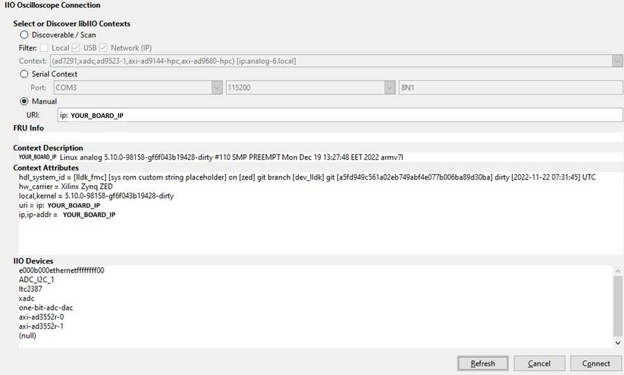
Figure 9 IIO Oscilloscope Connection
After the board is connected, select the one-bit-adc-dac-device, which is
the controller for the MAX7301ATL+ I/O Expander. Then, configure pins values of
output voltages 0 through 9, by setting the raw value to 1.
Input sources for AD3552R devices axi-ad3552r-0 and axi-ad3552r-1 can be
configured as dma_input, ramp_input, or adc_input.
dma_input: DAC input is driven by signals generated by Matlab stored in DMA.
ramp_input: DAC input is driven by ramp signal generated by Matlab stored in DMA.
adc_input: For passthrough models, DAC input is driven by ADC output.
For models with integrated HDL_DUT, DAC input is driven by HDL_DUT outputs.
Select the desired input source for both AD3552R devices axi-ad3552r-0 and
axi-ad3552r-1 as dma_input.
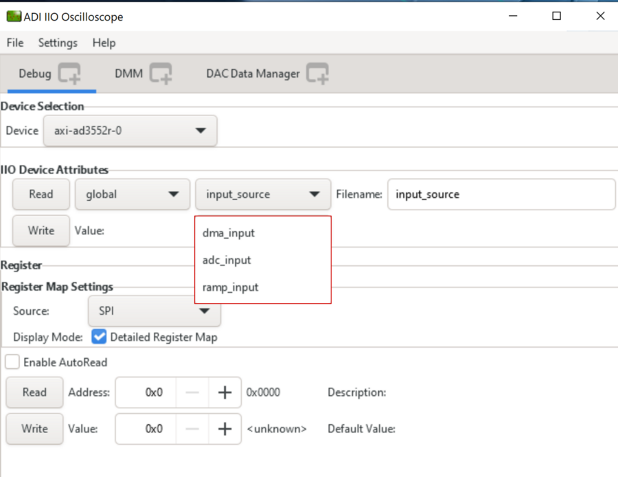
Figure 11 AD3552R Input Source Selection in IIO Oscilloscope
Important
Even if the input source is set to adc_input or ramp_input the steps regarding the DAC Data
Manager tab have to be followed.
Select the desired output range for both AD3552R devices.
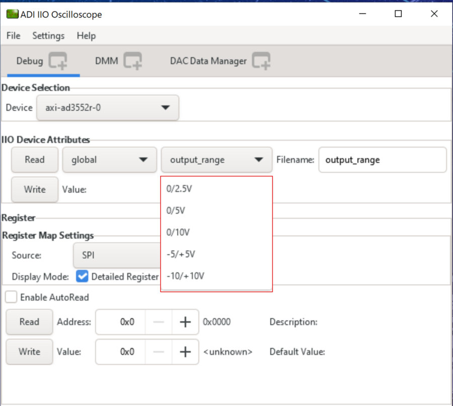
Figure 12 AD3552R Output Range Selection in IIO Oscilloscope
Warning
Make sure you don’t try to read/write the output_range attribute
when the stream_status is in start_stream or start_stream_synced.
Important
After changing the output range, the board should be power cycled
to ensure the DACs operate properly.
From the DAC Data Manager Window select the output channels of the DAC and
enable the cyclic buffer for each DAC.
Load an example file (.mat, .txt, etc) from the IIO Oscilloscope installation
directory, under Program Files/IIO Oscilloscope/lib/osc/waveforms folder.
Important
If the source is set as dma_input and the data from all 4 channels needs
to be synchronized, make sure that you press the load button for
the axi-ad3552r-1 device first then for axi-ad3552r-0.
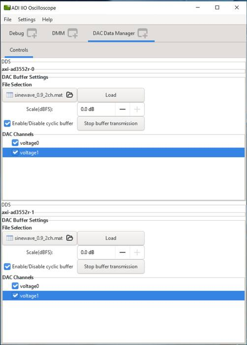
Figure 13 DAC Data Manager with Example Waves on 4 Channels
Click on the Load button.
From the Debug window, select the stream_status IIO Attribute and start the
stream (start_stream_synced means that all 4 channels are updated at the same
time and the data streaming process waits for both DACs to be started).
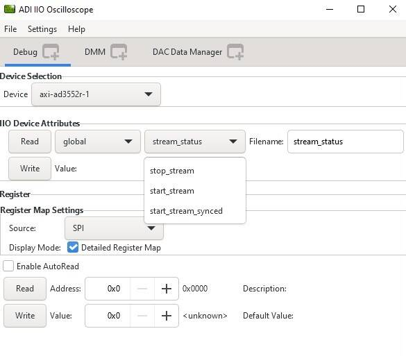
Figure 14 DAC Stream Status Selection
After the stream_status has been written and 4 channels are enabled, hit
play button. Then data capture window can be seen like in Figure 15.
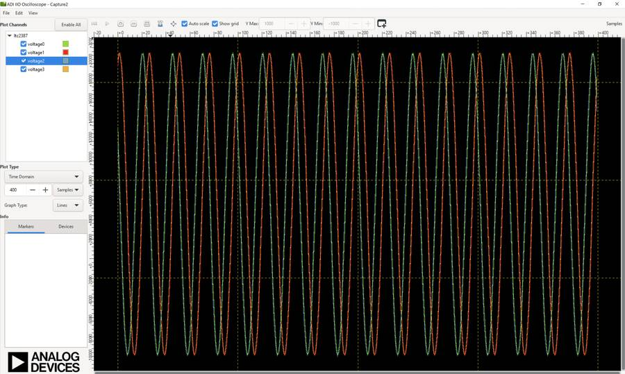
Figure 15 Captured Loopback Signal
Important
Note that there is a phase delay between voltage0/voltage2 and
voltage1/voltage3 because the DAC device channels are updated consecutively.
See the DAC UPDATE MODES section of the AD3552R Data Sheet.
Warning
If you intend to stop the stream transmission and start it again
synchronized, set the stream_status IIO Attribute to stop_stream for
axi-ad3552r-1 device first then for the axi-ad3552r-0 device.
PyADI-IIO
The CN0584 can be interfaced to Python using the
PyADI-IIO.
PyADI-IIO is a Python abstraction module to simplify interaction with IIO drivers
on ADI hardware. This module provides device-specific APIs built on top of the
current libIIO Python bindings. These interfaces try to match the driver
naming as much as possible without the need to understand the complexities of
libIIO and IIO.
Follow the step-by-step procedure on how to install, configure, and set up
PyADI-IIO and install the necessary packages/modules needed by referring to
PyADI-IIO.
If direct downloading ZIP folder, make sure to download from cn0585_v1 branch.
If cloning the repository using Git, type
gitcheckoutcn0585_v1 to switch to the correct branch.
Install additional packages.
pipinstalltkpytestparamikomatplotlib
Do above in the command prompt window. In general, use pip install “package name” to install any missing package.
After installing and configuring PYADI-IIO on your machine, you are now ready
to run Python script examples. To follow this example, navigate to pyadi-iio
folder (For example, “D:\pyadi-iio” is where pyadi-iio folder is located). Then
run the cn0585_fmcz_example.py found in the examples folder.
$ python examples/cn0585_fmcz_example.py
uri: ip:your_board_ip
############# EEPROM INFORMATION ############
read 256 bytes from /sys/devices/soc0/fpga-axi@0/41620000.i2c/i2c-1/1-0050/eeprom
Date of Man : Fri Jan 20 08:11:00 2023
Manufacturer : Analog Devices
Product Name : LLDK-LTC2387-AD3552R
Serial Number : 56864654
Part Number : 1234
FRU File ID : 12131321
PCB Rev : VB
PCB ID : HIL
BOM Rev : VC
Uses LVDS : Y
#############################################
GPIO4_VIO state is: 0
GPIO5_VIO state is: 0
Voltage monitor values:
Temperature: 49.25 C
Channel 0: 2267.45605283 millivolts
Channel 1: 627.4414057359999 millivolts
Channel 2: 2061.157224874 millivolts
Channel 3: 753.1738275079999 millivolts
Channel 4: 2092.285154536 millivolts
Channel 5: 2084.960935792 millivolts
Channel 6: 2253.4179669039998 millivolts
Channel 7: 1809.69238133 millivolts
AXI4-Lite 0x108 register value: 0x2
AXI4-Lite 0x10c register value: 0xB
Sampling rate is: 15000000
input_source:dac0: dma_input
input_source:dac1: dma_input
The DAC outputs should be looped back into the ADCs as shown in figure 7 in the
System Setup Using a ZedBoard section. After running the script with the board
in this configuration, the following window will pop up:
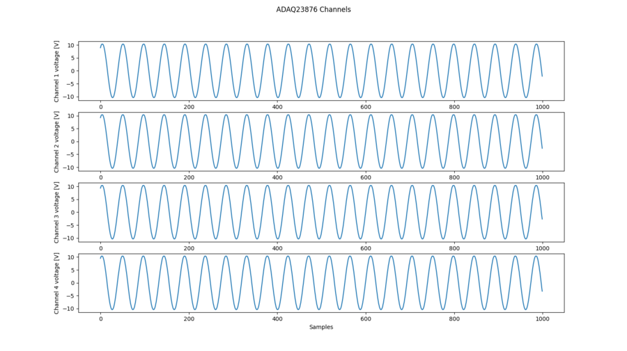
Figure 16 ADC Captured Data Python Plot
Important
If you plan to transmit multiple cycles of synchronous stream,
make sure the script starts/stops axi-ad3552r-1 first, then axi-ad3552r-0.
The steps described in the matlab tranceiver-toolbox section have to be
followed to configure the Matlab/Simulink project using the
MathWorks HDL Workflow Advisor.
Device Control and Data Streaming
Remote data streaming to and from hardware is made available through system
object interfaces, which are unique for each component or platform. The hardware
interfacing system objects provide a class to both configure a given platform
and move data back and forth from the device. To run the
CN0585StreamingTest.m
example, the following steps must be completed first.
Ensure MATLAB package “Communications Toolbox Support Package for Analog
Devices ADALM-Pluto Radio” is installed from Matlab Add-Ons.
Execute the following commands on the computer terminal (Cygwin is
recommended for Windows) to set up a local git repository.
Open Matlab from the HighSpeedConverterToolbox directory.
Open CN0585StreamingTest.m from the test subdirectory, update the board_ip
variable to match the Zedboard IP address, and finally run the script.
The DAC outputs should be looped back into the ADCs as shown in figure 6 in the
System Setup Using a ZedBoard section. After running the script with the board
in this configuration, the window in Figure 17 will pop up.
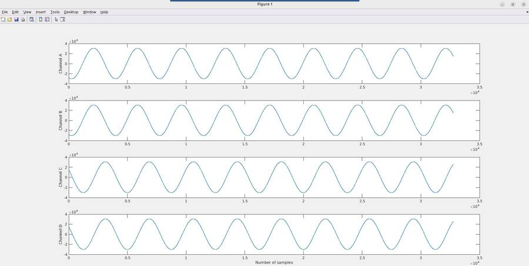
Figure 17 ADC Captured Data Matlab Plot
Note the y-axis is plotted in units of ADC codes, and can be converted to
voltage by referencing the transfer function on the ADAQ23876 data sheet.
Important
If you plan to transmit multiple cycles of synchronous stream,
make sure to start/stop axi-ad3552r-1 first, then axi-ad3552r-0.
Configuring Custom HDL Models Using Simulink
The ZedBoard that drives CN0585 is configured with a HDL reference design which
is an embedded system built around a processor core either ARM, NIOS-II, or
Microblaze.
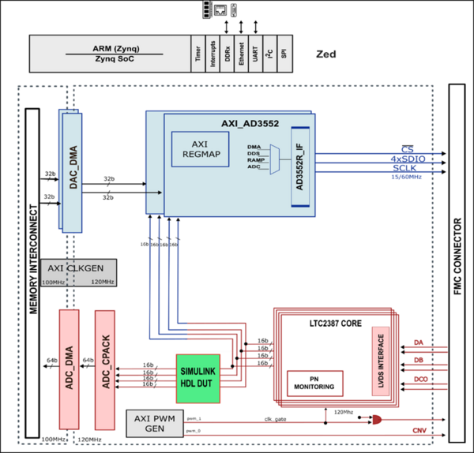
Figure 18 HDL Block Design with Simulink HDL_DUT in Rx Configuration
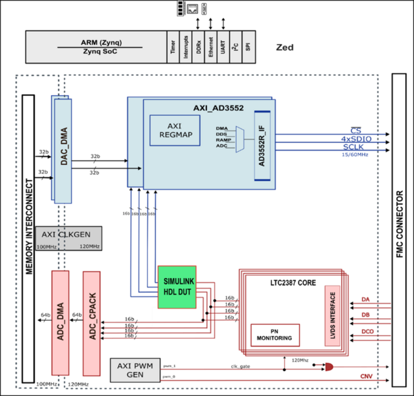
Figure 19 HDL Block Design with Simulink HDL_DUT in Tx Configuration
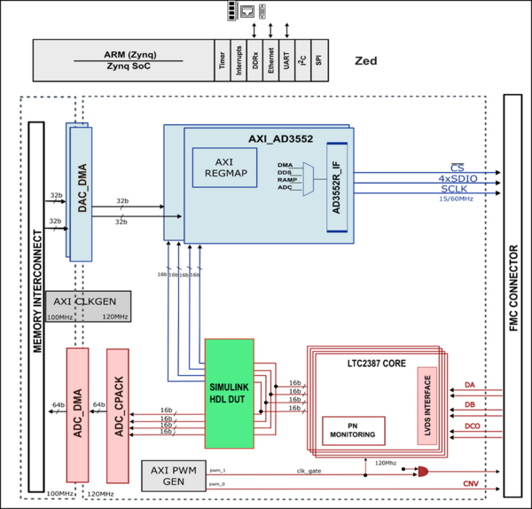
Figure 20 HDL Block Design with Simulink HDL_DUT in Rx-Tx Configuration
The device digital interface is handled by specific device cores axi_ad35552r
for the DAC path and axi_ltc2387 for the ADC path. The cores are programmable
through an AXI-lite interface. Details of reference design can be found in the
HDL Reference Design.
HighSpeedConverterToolbox repository supports IP Core generation flow from
MathWorks which allows for automated integration of HDL_DUT into HDL reference
designs from Analog Devices. The workflow for generating HDL_DUT codes takes
Simulink subsystems, runs HDL-Coder to generate source Verilog, and then
integrates that into a larger reference design. HDL_DUT can be integrated inside
HDL reference design in three different configurations which are Rx,Tx and
Rx-TX. Figure 19 and Figure 20 demonstrates how HDL_DUT is placed between Tx and
Rx path for these three configuration types. HDL_DUT Code Generation Workflow is
described in Configuring Matlab guide.
Digital Template
For an example with a model that utilizes a wider sample of MATLAB Simulink
blocks in the design, the Digital Template Model
includes a Simulink model and instructions on how to use it.

{kind=link}
{kind=link}